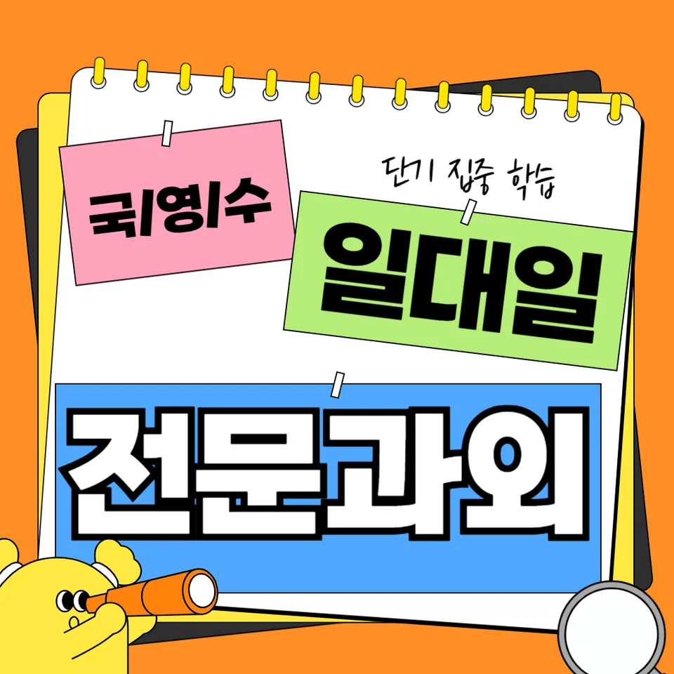

PageType : DONG
URL : /경기도과외/부천시과외/오정구과외/오정동과외/
지역 학습환경과 학생들의 변화
오정동과외를 시작하면 가장 먼저 달라지는 건 ‘공부를 하는 순간의 표정’입니다. 수업 시간에만 집중하는 학생도 있고, 집에 돌아간 뒤 스스로 시간을 붙잡는 학생도 있는데, 그 차이가 학습 태도로 바로 드러납니다. 오정동은 학원 선택지가 다양하지만, 학생이 진짜로 따라올 수 있는 속도와 방식이 맞지 않으면 금방 흐트러지곤 합니다. 그래서 오정동과외에서는 학교 진도와 시험 범위를 기준으로 과목별 부담을 재정렬해, 학생이 “오늘 할 일”을 한 줄로 정리할 수 있게 돕습니다. 수업이 이어질수록 필기 양이 늘기보다 중요한 건 이해의 연결이 생긴다는 점입니다. 수학은 풀이의 끝을 맞추는 데서 멈추지 않고, 오답이 나온 이유를 말로 설명하는 횟수가 늘어납니다. 국어는 지문을 읽는 속도만 빨라지는 게 아니라, 근거 문장을 찾는 습관이 자리 잡습니다.
학생들은 생활 리듬이 무너지면 과목 간 편차가 크게 벌어집니다. 오정동과외를 받는 학생들 중에서는 처음에 숙제를 ‘대충’ 끝내는 패턴이 보이지만, 점차 문제를 풀기 전 체크리스트를 먼저 확인하는 모습이 늘어납니다. 그 과정에서 스스로 계획을 세우는 시간이 늘고, 성적표를 볼 때 당황하는 횟수도 줄어듭니다. 지역 환경이 좋아도 결국 변화는 학생의 일상에서 만들어지기 때문에, 수업만큼이나 귀가 후 공부 흐름을 점검합니다.
학부모가 많이 고민하는 부분
학부모가 가장 많이 묻는 질문은 “우리 아이가 왜 의욕은 있는데 성적은 제자리일까요?”입니다. 오정동과외 상담에서도 이런 흐름이 반복됩니다. 예전에는 밤늦게까지 앉아 있는 시간이 늘어나도, 핵심 단위 학습이 빠져 있으면 성적은 따라오지 않습니다. 특히 내신이 가까워질수록 과목 간 우선순위가 흐려져서, 국영수 중 하나를 붙잡다 보면 다른 과목이 뒤늦게 무너지는 경우가 생깁니다. 그래서 오정동과외에서는 학부모가 매일 확인해야 하는 형태로 만들기보다, 학생 스스로 점검할 수 있는 루틴을 먼저 설계합니다.
또 다른 고민은 “시험 직전엔 갑자기 잘하더니 왜 금방 흔들릴까요?”라는 부분입니다. 시험에서 점수가 올라오는 건 이해가 생겨서일 때도 있지만, 문제 유형이 익숙해진 효과가 섞이면 금방 피로가 쌓일 수 있습니다. 이럴 때 학부모는 공부량을 더 늘리려 하지만, 오히려 공부습관의 구조를 바꿔야 합니다. 오정동과외는 시험 이후 오답을 버리지 않고 다음 주 학습으로 이어지게 하여, 학부모가 느끼는 불안이 점차 줄어들도록 합니다.
학년이 올라갈수록 달라지는 공부
초반에는 성실함이 결과로 이어지기 쉽지만, 학년이 올라가며 ‘성실함의 방향’이 중요해집니다. 오정동과외를 맡은 학생 중 중학생 초반에는 개념 정리가 빠르게 되지만, 중후반으로 갈수록 문제를 읽는 방식과 보기 판단이 약해져 성적이 출렁입니다. 이 시기에는 같은 내용을 다시 배우는 게 아니라, 이미 한 개념을 시험 문제 형태로 재구성하는 훈련이 필요합니다. 학생들은 수업이 끝나면 자신이 뭘 모르는지 정확히 말하지 못하는 경우가 많고, 그 모호함이 학습 시간을 낭비로 바꿉니다.
고학년으로 넘어가면 내신 준비는 물론이고 수행평가, 서술형, 과정 평가까지 변수가 늘어납니다. 오정동과외에서는 시험 기간에만 바뀌는 태도를 만들지 않고, 평소 공부습관을 내신의 형식에 맞게 조정합니다. 결국 학년이 올라갈수록 달라지는 건 ‘공부하는 양’이 아니라 ‘학습의 기준’입니다. 학생이 스스로 체크하며 움직일 수 있을 때 점수가 안정적으로 유지됩니다.
학교생활과 내신 준비
내신은 수업 태도와 직결되는 경우가 많습니다. 오정동과외를 시작한 뒤 학생들은 학교 수업을 듣는 방식부터 달라지기 시작합니다. 교과서의 어느 부분이 시험 범위인지, 설명이 끝난 뒤 스스로 어떤 질문을 가져가야 하는지 정리하는 과정이 생깁니다. 이 변화는 단순히 수업을 잘 듣는다는 의미가 아니라, 내신에서 점수로 연결되는 포인트를 미리 잡는 능력입니다. 예를 들어 영어는 단어 암기만 늘면 성적이 오르는 학생도 있지만, 문장 구조를 확인하지 않으면 서술형에서 약해집니다. 그래서 오정동과외에서는 내신에서 자주 출제되는 문항 스타일을 기준으로 학교 필기 내용을 재정리하게 합니다.
시험 기간이 다가오면 학생들은 ‘급하게 반복’만 하려는 경향이 있습니다. 그러나 오정동과외에서는 시험 직전의 전략이 평소 데이터 위에서만 작동하도록 설계합니다. 최근에 틀린 유형을 묶어 연습하고, 서술형은 답안 틀을 먼저 잡은 뒤 문장을 채우게 합니다. 이 방식이 누적되면 내신 점수는 오르는데, 무엇보다 학부모가 기대하는 “이번 시험이 끝나도 유지되는 성적”에 가까워집니다.
자기주도학습이 중요한 이유
자기주도학습은 의지가 강해서가 아니라, 학습을 이어가는 구조가 있기 때문입니다. 오정동과외에서는 학생이 매일 같은 시간에 앉도록 강요하지 않고, 스스로 시작할 수 있는 ‘첫 동작’을 만들어 줍니다. 예를 들어 과목별로 오늘의 목표를 한 문장으로 적고, 10분 단위로 체크를 누적하면 학생이 공부를 “끝까지 진행하는 경험”을 쌓게 됩니다. 이 경험이 쌓이면 숙제가 부담으로 바뀌지 않고, 다음 단계로 자연스럽게 넘어갑니다.
또한 자기주도학습은 오답을 대하는 방식에서 차이가 납니다. 시험이 끝난 뒤 오답을 복습하지 않으면 같은 실수가 반복됩니다. 오정동과외에서는 학생이 오답 원인을 분류하고, 다음 공부 시간에 다시 등장시키는 흐름을 만듭니다. 그 결과 공부습관이 안정되고, 시험이 다가와도 불안이 급격히 커지지 않습니다. 결국 자기주도학습은 “공부를 더 하는 방법”이 아니라 “공부를 잃지 않는 방법”입니다.
공부 습관이 성적에 미치는 영향
성적은 시험 당일의 집중력만으로 결정되지 않습니다. 오정동과외를 받는 학생들의 공통점은 공부하는 방식이 누적될수록 ‘실수의 종류’가 줄어든다는 점입니다. 처음에는 문제를 풀다 멈추는 시간이 길었는데, 점차 문제를 보기 전에 조건을 체크하고, 식이나 문장에 반드시 들어갈 표현을 먼저 고르는 습관이 생깁니다. 이 변화는 단기간에 눈에 띄지 않아도, 중간고사부터 체감이 커집니다.
공부습관이 흔들리면 성적이 떨어지는 속도도 빨라집니다. 특히 국어는 독해가 약해 보일 때 사실은 근거 찾기 순서가 무너진 경우가 많고, 수학은 개념을 아는 것처럼 보여도 적용 단계에서 끊기는 경우가 잦습니다. 오정동과외는 학생이 “왜 틀렸는지”를 스스로 말하게 만들어, 다음 문제에서 같은 함정을 피하도록 훈련합니다. 이런 학습 태도가 쌓이면 내신에서 요구하는 정확도가 올라갑니다.
체크해야 할 학습 포인트
아래 항목은 오정동과외 수업을 시작한 뒤 학생들이 가장 먼저 점검하는 요소입니다. 표시된 습관이 자리를 잡으면 시험 대비가 쉬워지고, 공부 계획도 흔들리지 않습니다.
- 수업 직후 10분 내 오늘 학습 내용을 한 문장으로 요약하는지
- 오답을 ‘정답 베껴쓰기’가 아니라 원인-유형-다음 행동으로 정리하는지
- 내신 범위(단원) 기준으로 주간 공부 계획을 세우는지
- 시험 전날에는 새 문제를 찾기보다 약점 유형을 반복하는지
학생의 변화는 결국 작은 점검이 쌓일 때 나타납니다. 오정동과외에서는 학교생활과 연결된 학습 태도까지 함께 다듬어, 시간이 지나도 흔들리지 않는 학습으로 이어지게 합니다.
자주 묻는 질문
오정동과외를 받으면 성적이 얼마나 빨리 오르나요?
학생마다 다르지만, 대개 공부 계획이 정리되고 공부습관이 안정되면 2~4주 안에 내신 대비 체감이 먼저 옵니다. 이후 시험 결과에서 누적 차이가 드러나는 편입니다.
숙제가 많은 학생도 자기주도학습이 가능한가요?
가능합니다. 자기주도학습은 ‘더 오래’가 아니라 ‘시작과 마무리의 규칙’이 핵심이라서, 오정동과외에서는 루틴부터 재구성합니다.
내신 준비는 어떻게 진행되나요?
학교 진도와 시험 범위를 기준으로 학습 단계를 나눠 진행하며, 서술형·수행평가 요소가 있는 경우엔 답안 틀과 확인 방식까지 포함해 학습합니다.
시험 기간에 너무 급해지는 학생은 어떻게 하나요?
오정동과외에서는 시험 기간에도 평소 데이터(오답, 약점 유형)를 바탕으로 우선순위를 정해, 무작정 추가 문제를 늘리지 않게 조정합니다.
과목 선택이나 순서는 어떻게 정하나요?
학생이 현재 가장 손해를 보는 단원과 문항 유형을 먼저 확인해 순서를 잡습니다. 오정동과외에서는 성적뿐 아니라 학생의 시간관리 부담까지 함께 고려합니다.
